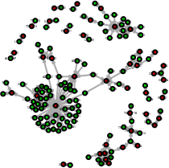
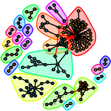
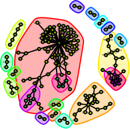
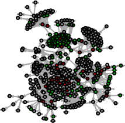
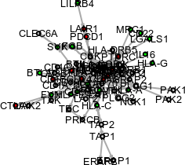

`BulkSignalR` : Inference of ligand-receptor interactions from bulk-rnaseq.
Jean-Philippe Villemin
Institut de Recherche en Cancérologie de Montpellier, Inserm, Montpellier, Francejean-philippe.villemin@inserm.fr
Jacques Colinge
Institut de Recherche en Cancérologie de Montpellier, Inserm, Montpellier, Francejacques.colinge@inserm.fr
07/22/2022
Source:vignettes/BulkSignalR.Rmd
BulkSignalR.RmdAbstract
BulkSignalR is used to infer ligand-receptor (LR) interactions from bulk (transcriptomic or proteomic) data. BulkSignalR bases its inferences on the LRdb database included in our other package, SingleCellSignalR available from Bioconductor. It relies on a statistical model that is specific to bulk data sets. Different visualization and data summary functions are proposed to help navigating prediction results.
BulkSignalR package version: 0.0.9
<style type="text/css">
.smaller {
font-size: 10px
}
</style>Load packages
#devtools::install_github("BulkSignalR")
devtools::install("/home/jp/Documents/workingDir/new/BulkSignalR")
library(BulkSignalR)
library(dplyr)
library(igraph)
library(kableExtra)Introduction
What is it for ?
BulkSignalR is is a tool that enables the detection of Ligand-Receptor (LR) interactions.
Originally developed for bulk RNA-SEQ, its application can be extended to spatial transcriptomics as 10X’s Visium technology,
Starting point
There are a variety of steps upstream of BulkSignalR that result in the generation of counts or normalized counts (RPKM, CPM, TPM...) for each sample, which can be seamlessly used in our workflow.
The minimal unit of data required to run BulksignalR is :
- A matrix with the expression where rows = genes and columns = samples. The first column of the table must contain gene names as HUGO symbols.
How it works ?
BulkSignalR uses (TODO).
As described on figure below, a few steps are required in order to process a BulkSignalR analysis.
Three S4 objects will be sequentially constructed as follows :
* BSR-DataModel, annotated as bsrdm
* BSR-Inference, annotated as bsrinf
* BSR-Signature, annotated as bsrsig

id0
BSR-DataModel will integrates the raw matrix and stores the learned parameters of the LR correlation distribution.
BSR-Inference will provide the list of LR interactions annotated with their potential underlying pathways. As a first result, you can easily export this table using LRinter function.
BSR-Signature will compute gene signature scores for each samples, by focusing either on LR interactions or on pathways. Finally, user can visualize these scoring via heatmaps to highlight some patterns in the data.
Ligand-Receptor interaction might contain redundant information that can be filtered out using several reduction strategies (reduceToPathway,reduceToBestPathway,...) detailed in the following sections.
Furthermore, we provide several handy functions to explore the data via different plots (heatmap, alluvial plot, chordiagram or networks).
BulkSignalR package functions have many arguments parameters that can be changed by the user to fit its needs (see Reference Manual for more details).
Parallel mode settings
User can simply increases the speed of an analysis by using several cores in parallel. For this purpose, one can set the number of cores he wants to use before starting BulkSignalR.
In parallel mode, an iseed can be provided with clusterSetRNGStream in order to reproduce the exact same analysis due to sampling In standard mode, set.seed() is sufficient.
library(doParallel)
n.proc <- 2
cl <- makeCluster(n.proc)
clusterSetRNGStream(cl, iseed = 1983)
registerDoParallel(cl)
# To add at the end of your script
# stopCluster(cl)First example
Loading the data
Here, we load salivary duct carcinoma transcriptomes integrated as sdc in BulkSignalR.
## SDC16 SDC15 SDC14 SDC13 SDC12 SDC11 SDC10 SDC9 SDC8 SDC7 SDC6 SDC5
## TSPAN6 1141 2491 1649 3963 2697 3848 3115 495 1777 1997 1682 1380
## TNMD 3 0 2 48 0 0 10 0 195 0 4 0
## DPM1 1149 2105 1579 2597 2569 2562 1690 964 980 3323 3409 743
## SCYL3 1814 768 3513 1402 1007 1243 2501 3080 939 1190 1489 1097
## C1orf112 438 1016 507 1149 598 1017 464 531 388 1088 1719 625
## FGR 381 922 307 256 249 902 304 355 410 1054 265 121
## SDC4 SDC3 SDC2 SDC1 SDC17 SDC19 SDC20 N20 SDC21 SDC22 N22 SDC23
## TSPAN6 1392 2490 1841 1883 1915 4093 3127 8035 4738 2994 9782 3866
## TNMD 0 0 0 1 5 0 18 21 6 2 27 0
## DPM1 1147 1705 1972 3048 2405 2943 2710 1688 2654 2772 2018 1610
## SCYL3 507 1545 2450 2006 910 1842 2947 1058 2636 4199 1173 2980
## C1orf112 318 1338 3065 723 509 1320 767 179 718 1498 147 629
## FGR 408 813 787 1152 1049 4205 722 149 584 701 164 842
## SDC24 SDC25
## TSPAN6 3014 1765
## TNMD 14 3
## DPM1 2875 2357
## SCYL3 2079 903
## C1orf112 1008 521
## FGR 676 654Building a BSR-DataModel
prepareDataset will create the first object with information relative to your experiment.
bsrdm <- prepareDataset(counts = sdc)
# print object
str(bsrdm)## Formal class 'BSRDataModel' [package "BulkSignalR"] with 6 slots
## ..@ initial.organism : chr "hsapiens"
## ..@ initial.orthologs: list()
## ..@ ncounts : num [1:16822, 1:26] 1286 3.38 1295.01 2044.52 493.66 ...
## .. ..- attr(*, "dimnames")=List of 2
## .. .. ..$ : chr [1:16822] "TSPAN6" "TNMD" "DPM1" "SCYL3" ...
## .. .. ..$ : chr [1:26] "SDC16" "SDC15" "SDC14" "SDC13" ...
## ..@ log.transformed : logi FALSE
## ..@ normalization : chr "UQ"
## ..@ param : list()learnParameters will be updated with parameters of LR correlation distribution. You can specify the directory and the file name where you want to plot this distribution.
null.model is set automatically according to the shape of this distribution.
However BulkSignalR authorize three modes for this parameter :
* normal : for most cases, gaussian distribution.
* mixedNormal : when distribution looks bimodal.
* stable : for spatial transcriptomics (ST).
bsrdm <- learnParameters(bsrdm, null.model = "normal", quick = FALSE,
plot.folder = "../man/figures/", filename = "sdc",
verbose = TRUE)
# print object updated
str(bsrdm)## Formal class 'BSRDataModel' [package "BulkSignalR"] with 6 slots
## ..@ initial.organism : chr "hsapiens"
## ..@ initial.orthologs: list()
## ..@ ncounts : num [1:16822, 1:26] 1286 3.38 1295.01 2044.52 493.66 ...
## .. ..- attr(*, "dimnames")=List of 2
## .. .. ..$ : chr [1:16822] "TSPAN6" "TNMD" "DPM1" "SCYL3" ...
## .. .. ..$ : chr [1:26] "SDC16" "SDC15" "SDC14" "SDC13" ...
## ..@ log.transformed : logi FALSE
## ..@ normalization : chr "UQ"
## ..@ param :List of 13
## .. ..$ n.rand.LR : int 5
## .. ..$ n.rand.RT : int 2
## .. ..$ plot.folder : chr "../man/figures/"
## .. ..$ file.name : chr "sdc"
## .. ..$ with.complex: logi TRUE
## .. ..$ max.pw.size : num 200
## .. ..$ min.pw.size : num 5
## .. ..$ min.positive: num 4
## .. ..$ quick : logi FALSE
## .. ..$ seed : num 123
## .. ..$ min.corr.LR : num -1
## .. ..$ LR.0 :List of 2
## .. .. ..$ n : int 12915
## .. .. ..$ model:List of 5
## .. .. .. ..$ mu : num 0.0172
## .. .. .. ..$ sigma : num 0.254
## .. .. .. ..$ factor : num 1
## .. .. .. ..$ start : num 3.2e-05
## .. .. .. ..$ distrib: chr "censored_normal"
## .. ..$ RT.0 :List of 2
## .. .. ..$ n : int 954132
## .. .. ..$ model:List of 5
## .. .. .. ..$ mu : num 0.015
## .. .. .. ..$ sigma : num 0.274
## .. .. .. ..$ factor : num 1
## .. .. .. ..$ start : num 0.000107
## .. .. .. ..$ distrib: chr "censored_normal"The plot with distribution of LR correlation in sdc is displayed below.

id1
Building a BSR-Inference
From the previous object bsrdm , you will create bsrinf by calling initialInference . bsrinf contains the inferred LR interactions with their associated pathways and corrected p-values.
From here, you can already access LR interactions using : LRinter(bsrinf).
bsrinf <- initialInference(bsrdm)
LRinter.dataframe <- as.data.frame(LRinter(bsrinf))
knitr::kable(head(LRinter.dataframe[order(LRinter.dataframe$qval <= 0.001),
c("L", "R" ,"LR.corr", "pw.id", "pw.name", "pval" , "qval")]),row.names = FALSE) %>%
kable_material(c("striped", "hover"))| L | R | LR.corr | pw.id | pw.name | pval | qval |
|---|---|---|---|---|---|---|
| A2M | LRP1 | 0.5391453 | R-HSA-196854 | Metabolism of vitamins and cofactors | 0.0200711 | 0.0260773 |
| A2M | LRP1 | 0.5391453 | R-HSA-2173782 | Binding and Uptake of Ligands by Scavenger Receptors | 0.0181048 | 0.0239389 |
| A2M | LRP1 | 0.5391453 | R-HSA-2187338 | Visual phototransduction | 0.0174728 | 0.0232013 |
| A2M | LRP1 | 0.5391453 | R-HSA-6806667 | Metabolism of fat-soluble vitamins | 0.0112186 | 0.0161057 |
| A2M | LRP1 | 0.5391453 | R-HSA-975634 | Retinoid metabolism and transport | 0.0112186 | 0.0161057 |
| ADAM10 | AXL | 0.4441026 | R-HSA-194138 | Signaling by VEGF | 0.0029121 | 0.0056264 |
You can finally filter out the less significant LR interactions and order them by best q-value before saving them to a file.
write.table(LRinter.dataframe[order(LRinter.dataframe$qval <= 0.001),],
"../man/figures/LR.tsv",
row.names = FALSE,
sep = "\t",
quote = FALSE)Reduction strategies
Raw results from LRinter(bsrinf) can suffer from redundancy. LR interactions can appear several times in several pathways.
To resolve this pitfall, we propose several ways to reduce information in order to increase readability of the results.
User can simplify a bsrinf object on demand, to focus etheir on the pathways or on LR interactions.
Reducing a BSRInference to pathway
With reduceToPathway ,all the ligands and receptors forming pairs related to a certain pathway, are pulled together to only report one one row per pathway. For a given pathway, the reported P-values and target genes are those of the best LR pair that appeared in this pathway.
bsrinf.redP <- reduceToPathway(bsrinf)
# write.table(as.data.frame(LRinter(bsrinf.redP)),
# "../man/figures/sdc_LR.reduceToPathway.tsv",
# row.names = FALSE, sep="\t", quote=FALSE)Reducing a BSRInference to best pathway
With ReduceToBestPathway, a BSR-Inference object is reduced to only report one pathway per LR pair. The pathway with the smallest P-value is selected for the pair. Pathways can be on several rows associated with different LR interactions.
bsrinf.redBP <- reduceToBestPathway(bsrinf)
# write.table(as.data.frame(LRinter(bsrinf.red)),
# "../man/figures/sdc_LR.reduceToBestPathway.tsv",
# row.names = FALSE, sep="\t", quote=FALSE)Double Reduction
User can apply reduceToPathway(bsrinf) and reduceToBestPathway(bsrinf) reductions sequentially to maximize reduction effect.
If the exact same pool of LR given by reduceToPathway(bsrinf) is associated with several pathways, the pathway with the best p-value for this pool will be kept by reduceToBestPathway(bsrinf).
bsrinf.redP <- reduceToPathway(bsrinf)
bsrinf.redPBP <- reduceToBestPathway(bsrinf.redP)
# write.table(as.data.frame(LRinter(bsrinf.redPBP)),
# "../man/figures/sdc_LR.double.reduction.tsv",
# row.names = FALSE, sep="\t", quote=FALSE)These reductions will be useful in order to compute gene signature and visualize our data. This will be explained below.
Building a BSR-Signature
Finally we applied getLRGeneSignatures with the different BSR-Inference object previously reduced. Thus, we will create several BSR-Signature object bsrsig.redPP.
scoreLRGeneSignatures is applied conjointly on BSR-Inference & BSR-Signature objects to score signatures at the pathway or LR interaction levels.
Then, we provide a simpleHeatmap function to visualize gene score signatures inside a heatmap as shown below.
Scoring by ligand-receptor
bsrsig.redBP <- getLRGeneSignatures(bsrinf.redBP, qval.thres=0.001)
scoresLR <- scoreLRGeneSignatures(bsrdm,bsrsig.redBP,name.by.pathway=FALSE)
simpleHeatmap(scoresLR[1:20,],
path = "../man/figures/",
filename = "sdc_scoresLR",
column.names = TRUE,
height = 5, width = 9,
pointsize = 10,
hcl_palette = "Cividis"
)
# You can easily export the scoring matrix for LR as follows
# write.table(scoresLR,
# "../man/figures/sdc_scoreLR.tsv",
# col.names = NA,sep = "\t",
# quote = FALSE)id3
Scoring by pathway
bsrsig.redPBP <- getLRGeneSignatures(bsrinf.redPBP,qval.thres=0.001)
scoresPathway <- scoreLRGeneSignatures(bsrdm,bsrsig.redPBP,name.by.pathway=TRUE)
simpleHeatmap(scoresPathway[1:10,],
path = "../man/figures/",
filename = "sdc_scoresPathway",
column.names = TRUE,
width = 9,
height = 5,
pointsize = 12,
hcl_palette = "Blue-Red 2"
)
# Dual Heatmap for comparing pre-existing signature
# data(immune.signatures, package="BulkSignalR")
# imm.scores <- scoreSignatures(bsrdm, immune.signatures)
# dualHeatmap(scoresPathway, imm.scores, width=6, height=9,
# file="SDC-LR-dualheatmap.pdf",
# pointsize=4, vert.p=0.85)
# You can easily export the scoring matrix for pathways as follows
# write.table(scoresPathway,
# "../man/figures/sdc_scorepathways.tsv",
# col.names = NA,sep = "\t",
# quote = FALSE)id4
Other Visualisation utilities
In the next section, we show how to visualize the data in different ways.
Heatmap Expression Ligand-Receptor-Target
Once you have compute gene signatures score. One may wish to look at the expression of the genes involved in that signature.
For instance, here we display three heatmaps corresponding to the z-scored expression of Ligands (Pink), Receptors (Green) and Targets (Blue).
On top, user can see the original scoring computed before by scoreLRGeneSignatures for the given pathway.
pathway1 <- "Elastic fibre formation"
signatureHeatmaps(
pathway = pathway1,
bsrdm = bsrdm,
bsrsig = bsrsig.redPBP,
path = "../man/figures/",
filename = "sdc_signatureheatmap",
width = 15,
height = 10 ,
show_column_names = TRUE)id5
AlluvialPlot
alluvial.plot is a function that let the user observed the different links between ligands, receptors and pathways stored inside bsrinf object.
First you need to specify if you want to filter by Ligand, Receptor or Pathway. Then, you have to pass a keyword (gene name or pathway) to keep only the links related to your choice.
You also can apply a filter on Q-value to limit the number of links and improve rendering.
alluvial.plot(bsrinf,
keywords = c("COL4A1"),
type = "L",
qval = 0.001,
path = "../man/figures/",
filename = "sdc_alluvial",
width = 16,
height = 12
)id6
BubblePlot
bubblePlot.pathways.LR is a handy way to visualize strength of several LR interactions in relation with their associated pathways.
You have to give a vector of pathways.
Do not add too many pathways. otherwise the graph will be unreadable.
pathway1 <- "PD-1 signaling"
pathway2 <- "Interferon gamma signaling"
pathways <- c(pathway1,pathway2)
bubblePlot.pathways.LR(bsrinf,
pathways = pathways,
threshold = 1,
path = "../man/figures/",
color = "red",
filename = "sdc_bubble",
width = 16,
height = 7,
pointsize = 8
#filter.L = c("ADAM12")
#filter.R = c("ITGA3")
) id7
Chordiagram
chord.diagram.LR is a function that let the user observe the different LR interactions for one specific pathway.
LR correlations strength are drawn in yellow.
Ligand are in grey, whereas Receptors are in green.
You can highlight in red one specific interaction by passing values of a LR pair as follows ligand="COL18A1", receptor="ITGA3".
chord.diagram.LR (bsrinf,
path = "../man/figures/",
filename = "sdc_chord",
pw.id.filter = "R-HSA-202733",
ligand = "COL18A1",
receptor = "ITGA3",
limit = 20,
width = 5,
height = 4.5
)id8
Network analysis
BulkSignalR can also map internal network linked to genes of interest through the integration of regulated KEGG and Reactome pathways together with ligands and receptors involved in inferred interactions.
The networks can be exported in text files and graphML objects to be further explored with Cytoscape (www.cytoscape.org), yEd (www.yworks.com), or similar software tools.
# Generate a ligand-receptor network and export it in .graphML
# for Cytoscape or similar tools
gLR <- getLRNetwork(bsrinf.redBP, qval.thres=1e-8)
write.graph(gLR,file="SDC-LR-network.graphml",format="graphml")
# As an alternative to Cytoscape, you can play with igraph package functions.
plot(gLR,
edge.arrow.size=0.1,
vertex.label.color="black",
vertex.label.family="Helvetica",
vertex.label.cex=0.1)
# Community detection
u.gLR <- as.undirected(gLR) # most algorithms work for undirected graphs only
comm <- cluster_edge_betweenness(u.gLR)
plot(comm,u.gLR,
vertex.label.color="black",
vertex.label.family="Helvetica",
vertex.label.cex=0.1)
# Cohesive blocks
cb <- cohesive_blocks(u.gLR)
plot(cb,u.gLR,
vertex.label.color="black",
vertex.label.family="Helvetica",
vertex.label.cex=0.1,
edge.color="black")
# Generate a ligand-receptor network complemented with intra-cellular,
# receptor downstream pathways [computations are a bit longer here]
gLRintra <- getLRIntracellNetwork(bsrinf.redBP, qval.thres=1e-8)
write.graph(gLRintra, file="SDC-LR-intracellular-network.graphml",
format="graphml")
lay <- layout_with_kk(gLRintra)
plot(gLRintra,
layout=lay,
edge.arrow.size=0.1,
vertex.label.color="black",
vertex.label.family="Helvetica",
vertex.label.cex=0.1)
# Reduce complexity by focusing on strongly targeted pathways
pairs <- LRinter(bsrinf.redBP)
top <- unique(pairs[pairs$pval<1e-20,c("pw.id","pw.name")])
top
gLRintra.res <- getLRIntracellNetwork(bsrinf.redBP, qval.thres=0.01,
restrict.pw=top$pw.id)
lay <- layout_with_fr(gLRintra.res)
write.graph(gLRintra, file="SDC-LR-intracellular-network.reduced.graphml",
format="graphml")
plot(gLRintra.res,
layout=lay,
edge.arrow.size=0.1,
vertex.label.color="black",
vertex.label.family="Helvetica",
vertex.label.cex=0.4)
Alternative workflow for non human species
In order to process a non human organism, user can call a few set of supplementary functions By default, BulksignalR works with Homo Sapiens. We developp a stragtegy using orthologous genes from the orthogene package directly integrated in BulkSignalR.
findOrthoGenes create a correspondence table between human and another organism.
convertToHuman will convert initial matrix to hsapiens genes nomenclature.
When you call prepareDataset , you need to pass this transformed matrix, the initial organism and the correspondence table.
Inference calling is done as for a normal workflow.
Finally, you switch back to gene names relative to the initial organism for which experiment was done via resetToInitialOrganism The rest of the workflow is done as usual for computing signature and visualization.
data(bodyMap.mouse)
ortholog.dict <- findOrthoGenes (from_organism = "mmusculus",
from_values = rownames(bodyMap.mouse))
matrix.expression.human <- convertToHuman(counts = bodyMap.mouse,
dictionary = ortholog.dict)
bsrdm <- prepareDataset(counts = matrix.expression.human,
species = "mmusculus",
conversion.dict = ortholog.dict)
bsrdm <- learnParameters(bsrdm, null.model="normal" , quick = FALSE,
plot.folder="../man/figures/",filename = "bodyMap.mouse",
verbose = TRUE)
bsrinf <- initialInference(bsrdm)
bsrinf <- resetToInitialOrganism(bsrinf, conversion.dict=ortholog.dict)
# For example, if you want to explore LR interactions
# you can proceed as showed before for a human dataset.
# bsrinf.redBP <- reduceToBestPathway(bsrinf)
# bsrsig.redBP <- getLRGeneSignatures(bsrinf.redBP, qval.thres=0.001)
# scoresLR <- scoreLRGeneSignatures(bsrdm,bsrsig.redBP,name.by.pathway=FALSE)
# simpleHeatmap(scoresLR[1:20,], file="sdc_scoreLR.pdf", column.names=TRUE, width=9, height=5, pointsize=8)Acknowledgements
We would like to thank a few people who contributed to this work : - Laia Bassaganyas for insightful comments on the manuscript. - Guillaume Tosato for his help with the figures. - Gauthier Gadouas for testing the software on different platforms.
Thank you for reading this guide and for using BulkSignalR.
Session information
## R version 4.2.0 (2022-04-22)
## Platform: x86_64-pc-linux-gnu (64-bit)
## Running under: Ubuntu 18.04.6 LTS
##
## Matrix products: default
## BLAS: /usr/lib/x86_64-linux-gnu/blas/libblas.so.3.7.1
## LAPACK: /usr/lib/x86_64-linux-gnu/lapack/liblapack.so.3.7.1
##
## locale:
## [1] LC_CTYPE=en_US.UTF-8 LC_NUMERIC=C
## [3] LC_TIME=en_US.UTF-8 LC_COLLATE=en_US.UTF-8
## [5] LC_MONETARY=en_US.UTF-8 LC_MESSAGES=en_US.UTF-8
## [7] LC_PAPER=en_US.UTF-8 LC_NAME=C
## [9] LC_ADDRESS=C LC_TELEPHONE=C
## [11] LC_MEASUREMENT=en_US.UTF-8 LC_IDENTIFICATION=C
##
## attached base packages:
## [1] parallel stats graphics grDevices utils datasets methods
## [8] base
##
## other attached packages:
## [1] doParallel_1.0.17 iterators_1.0.14 foreach_1.5.2 kableExtra_1.3.4
## [5] igraph_1.3.4 dplyr_1.0.9 BulkSignalR_0.0.9 BiocStyle_2.25.0
##
## loaded via a namespace (and not attached):
## [1] utf8_1.2.2 tidyselect_1.1.2
## [3] htmlwidgets_1.5.4 grid_4.2.0
## [5] BiocParallel_1.31.8 Rtsne_0.16
## [7] devtools_2.4.3 munsell_0.5.0
## [9] ScaledMatrix_1.5.0 codetools_0.2-18
## [11] ragg_1.2.2 statmod_1.4.36
## [13] scran_1.25.0 withr_2.5.0
## [15] colorspace_2.0-3 Biobase_2.57.1
## [17] highr_0.9 knitr_1.39
## [19] ggalluvial_0.12.3 rstudioapi_0.13
## [21] orthogene_1.2.0 stats4_4.2.0
## [23] SingleCellExperiment_1.19.0 ggsignif_0.6.3
## [25] labeling_0.4.2 MatrixGenerics_1.9.1
## [27] GenomeInfoDbData_1.2.8 farver_2.1.1
## [29] pheatmap_1.0.12 rprojroot_2.0.3
## [31] vctrs_0.4.1 treeio_1.20.1
## [33] generics_0.1.3 xfun_0.31
## [35] R6_2.5.1 GenomeInfoDb_1.33.3
## [37] clue_0.3-61 rsvd_1.0.5
## [39] locfit_1.5-9.6 bitops_1.0-7
## [41] cachem_1.0.6 gridGraphics_0.5-1
## [43] DelayedArray_0.23.0 assertthat_0.2.1
## [45] scales_1.2.0 gtable_0.3.0
## [47] beachmat_2.13.4 processx_3.7.0
## [49] rlang_1.0.4 systemfonts_1.0.4
## [51] splines_4.2.0 GlobalOptions_0.1.2
## [53] rstatix_0.7.0 lazyeval_0.2.2
## [55] broom_1.0.0 BiocManager_1.30.18
## [57] yaml_2.3.5 abind_1.4-5
## [59] backports_1.4.1 tools_4.2.0
## [61] usethis_2.1.6 bookdown_0.27
## [63] ggplotify_0.1.0 ggplot2_3.3.6
## [65] gplots_3.1.3 ellipsis_0.3.2
## [67] jquerylib_0.1.4 RColorBrewer_1.1-3
## [69] BiocGenerics_0.43.0 stabledist_0.7-1
## [71] sessioninfo_1.2.2 Rcpp_1.0.9
## [73] sparseMatrixStats_1.9.0 zlibbioc_1.43.0
## [75] purrr_0.3.4 RCurl_1.98-1.7
## [77] ps_1.7.1 prettyunits_1.1.1
## [79] ggpubr_0.4.0 GetoptLong_1.0.5
## [81] S4Vectors_0.35.1 SummarizedExperiment_1.27.1
## [83] cluster_2.1.3 fs_1.5.2
## [85] magrittr_2.0.3 data.table_1.14.2
## [87] RSpectra_0.16-1 circlize_0.4.15
## [89] matrixStats_0.62.0 pkgload_1.3.0
## [91] patchwork_1.1.1 evaluate_0.15
## [93] IRanges_2.31.0 shape_1.4.6
## [95] compiler_4.2.0 tibble_3.1.8
## [97] KernSmooth_2.23-20 SingleCellSignalR_1.9.0
## [99] crayon_1.5.1 htmltools_0.5.3
## [101] ggfun_0.0.6 tidyr_1.2.0
## [103] aplot_0.1.6 DBI_1.1.3
## [105] gprofiler2_0.2.1 ComplexHeatmap_2.13.0
## [107] MASS_7.3-57 babelgene_22.3
## [109] Matrix_1.4-1 car_3.1-0
## [111] cli_3.3.0 metapod_1.5.0
## [113] GenomicRanges_1.49.0 pkgconfig_2.0.3
## [115] pkgdown_2.0.5 scuttle_1.7.2
## [117] plotly_4.10.0 xml2_1.3.3
## [119] ggtree_3.4.1 svglite_2.1.0
## [121] bslib_0.3.1 dqrng_0.3.0
## [123] multtest_2.53.0 webshot_0.5.3
## [125] XVector_0.37.0 rvest_1.0.2
## [127] yulab.utils_0.0.5 stringr_1.4.0
## [129] SIMLR_1.23.0 callr_3.7.1
## [131] digest_0.6.29 RcppAnnoy_0.0.19
## [133] pracma_2.3.8 rmarkdown_2.14
## [135] tidytree_0.3.9 edgeR_3.39.1
## [137] DelayedMatrixStats_1.19.0 gtools_3.9.3
## [139] rjson_0.2.21 lifecycle_1.0.1
## [141] nlme_3.1-158 jsonlite_1.8.0
## [143] BiocNeighbors_1.15.1 carData_3.0-5
## [145] desc_1.4.1 viridisLite_0.4.0
## [147] limma_3.53.3 fansi_1.0.3
## [149] pillar_1.8.0 lattice_0.20-45
## [151] homologene_1.4.68.19.3.27 survival_3.3-1
## [153] fastmap_1.1.0 httr_1.4.3
## [155] pkgbuild_1.3.1 glue_1.6.2
## [157] remotes_2.4.2 png_0.1-7
## [159] bluster_1.7.0 stringi_1.7.8
## [161] sass_0.4.1 textshaping_0.3.6
## [163] BiocSingular_1.13.0 caTools_1.18.2
## [165] memoise_2.0.1 irlba_2.3.5
## [167] ape_5.6-2